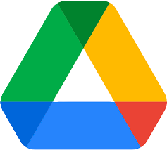

Resumo áudioHelpProf — Pílulas, dúvidas frequentes e assistente
Últimas Pílulas de Sobrevivência (2-min guides)
Maiores dúvidas — arquivos e nuvem
As dúvidas que mais aparecem quando o PEI pede tudo “para ontem”, com resposta direta.
Perdi o arquivo do Guia de Aprendizagem: onde ele costuma estar?
Procure primeiro no Drive (pasta da escola ou “Meu Drive”). Se baixou para o computador, abra Downloads e busque pelo nome da turma ou “PEI”. Se estava no e-mail, use a lupa do Gmail com o nome do estudante.
O link do Drive abre “sem permissão” para a família ou para a coordenação
Abra o arquivo, clique em Compartilhar e confira se o e-mail da pessoa está na lista com Leitor (só ver) ou Editor (se for trabalhar junto). Em material sensível do PEI, evite “qualquer pessoa com o link”.
Preciso mandar a mesma planilha para vários colegas sem apagar dados uns dos outros
Envie um arquivo no Drive com permissão de comentário ou leitura. Se cada um precisa de uma cópia própria (ex.: Tabela de Frequência por turma), use Arquivo > Fazer uma cópia e oriente cada professor a preencher a própria.
Ferramentas que mais ajudam no PEI
No Ensino Integral, o que salva tempo é combinar poucas ferramentas certas: uma para guardar documentos, outra para números (frequência, notas) e outra para falar com escola e família sem perder o fio.
-
Google Drive
Guarde Guias de Aprendizagem, atas e PDFs numa pasta por turma. Menos “qual era o anexo?” no grupo.
-
Documentos Google
Ótimo para Plano de Ação e texto colaborativo com a equipe — histórico de versões evita susto antes da reunião.
-
Excel / Planilhas
Para Tabela de Frequência, notas bimestrais e listas — congele a 1ª linha e use filtros para achar aluno em segundos.
-
Google Forms
Pesquisas rápidas com famílias, autorização de saída ou check-in de leitura — respostas já vão para uma planilha.
-
E-mail institucional
Canal oficial para coordenação e registros. Combine assunto padrão: Turma + assunto + data.
-
Google Classroom
Centraliza avisos e materiais por turma no integral — menos dispersão entre grupos de mensagem.
Maiores dúvidas — planilhas e e-mail
Quando a planilha “quebra” ou o e-mail não sai, costuma ser um destes pontos.
Congelei a linha errada na planilha de frequência e agora não consigo rolar direito
No Excel ou Planilhas Google: menu Exibir (ou Ver) > Congelar > Descongelar. Depois selecione a linha abaixo do cabeçalho e use Congelar primeira linha de novo.
O e-mail volta dizendo que o anexo é grande demais
Envie o arquivo pelo Drive (link restrito) em vez de anexar. No corpo do e-mail, explique: “Material do PEI — link seguro da escola”.
Duplicou nome na lista e a frequência ficou errada
Use Remover duplicatas (Excel) ou Dados > Remover duplicatas (Planilhas) na coluna do nome. Atenção: faça uma cópia da planilha antes, por segurança.
Todas as dúvidas
Lista rápida para escanear. Toque em Ver todas para abrir o restante.
- Como recuperar senha do e-mail da escola?
- O que fazer quando o PDF do PEI não imprime direito?
- Como juntar vários arquivos num só PDF sem programa pago?
- Planilha: como travar só algumas células (notas) para alunos não apagarem fórmulas?
- Drive: como saber quem já abriu o arquivo (quando a escola permite)?
- Excel: atalho para colar só valores (sem bagunçar formatação)
- Como organizar pastas do Drive por bimestre sem virar “pastinha dentro de pastinha”?
- Gmail: criar rascunho com o mesmo assunto toda semana (reunião de equipe)
- Planilhas Google: aviso quando alguém altera a Tabela de Frequência
- Como exportar notas da planilha para um relatório simples para a coordenação?
- Drive em celular: baixar arquivo para mostrar offline na aula
- O que colocar no assunto do e-mail quando for documentação do PEI?
- Como compartilhar pasta só com quem tem e-mail @escola?